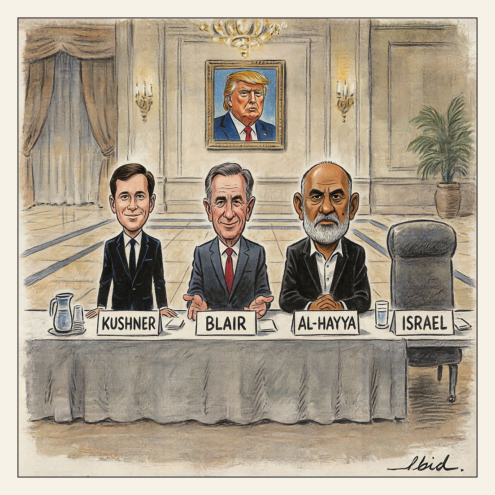
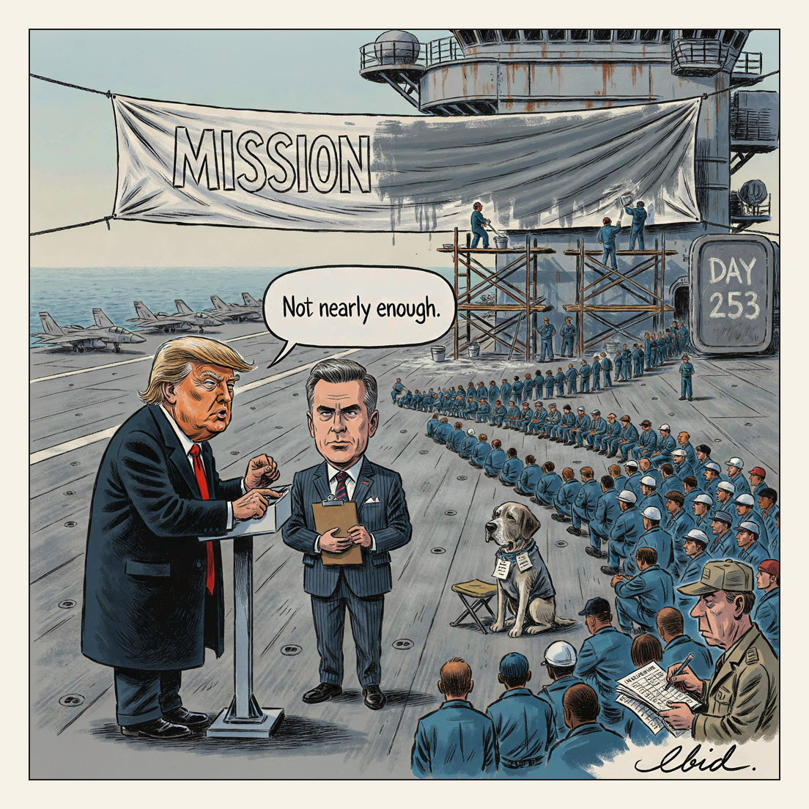

Ibid.
cartoons about power — sources cited
![Editorial cartoon: Todd Blanche takes the attorney general's oath with his right hand raised and his left hand flat on Donald Trump's shoulder as Trump sits at a courtroom defense table in a gold-curtained White House room; a clerk holds out a pocket Constitution nobody touches, a banker's box marked BONDI sits by the open door as a blonde figure walks out, evidence boxes marked VOTER ROLLS stand in the foreground beside a briefcase marked BLANCHE, and a wall television carries a Meet the Press interview.](images/20260816-continuous-representation_master.jpg)

Withdrawal working group postponed at a participant's request.
Working Group · August 16, 2026

Requested metrics: one dog per five thousand sailors.
Same Banner, Fresh Paint · August 14, 2026

![Cartoon of a Clacton seafront sweet stall. A customer's hands hold up a three-foot stick of seaside rock snapped in half; the flat broken face shows the word FARAGE running through the candy core, while tiny candidate names printed down the stick's length are too small to read. Behind the counter a silver-haired man in a velvet-collared camel coat works the brass till, saying 'Three feet. Best value in Clacton.' A propped price card reads 34 NAMES. A drenched, top-hatted caped man with an enormous rosette waits in the queue.](images/20260813-clacton-rock_master.jpg)
![Charcoal cartoon of a highway toll plaza standing in open sea. Donald Trump, in a high-visibility vest, leans from the left booth thumbing a hand tally-counter beneath a sign reading HORMUZ, his striped barrier arm lowered over the water. Facing him from a mirror-image booth marked REZAEI, under a crooked plank sign reading WILL NOT OPEN, Mohsen Rezaei mans the other booth with his own barrier down. A single small dhow idles in the gap between the two lowered arms; far off on the horizon a small freighter smokes from its engine room.](images/20260812-toll-plaza_master.jpg)

![A colored-pencil style editorial cartoon shows a courtroom where a caricatured Donald Trump leans across a sheet-covered body on a gurney, pressing defibrillator paddles to it while a speech bubble above him reads "It's dead."; the body's exposed foot bears a toe tag labeled "$1.776BN FUND" and a placard on the sheet reads "BLANCHE". Behind the gurney, a man raises his right hand as if being sworn in, while two older men in suits sit at an elevated wooden bench, one reading papers and one holding a pen, with a U.S. flag at the left and the signature "Ibid." in the lower right corner.](images/20260801-the-assurance_master.jpg)
![A political cartoon shows a caricature of Donald Trump standing on a paint-splattered stepladder in front of a columned building, tucking dollar bills into his pocket while changing letters on a large marquee-style price board that reads "TRUTH API $100,000 MO" and "MULTI-YEAR $60,000"; a speech balloon from him says "Free tier reads the newspaper." To the right, a heavyset bearded man in sunglasses and an apron labeled "DON JR." holds out a card-payment terminal with cash stuffed in his apron pocket, while at lower left a crowd of men raises hands, smartphones, and money toward the sign, and the artist's signature "lbid" appears in the bottom right corner.](images/20260801-today-s-specials_master.jpg)